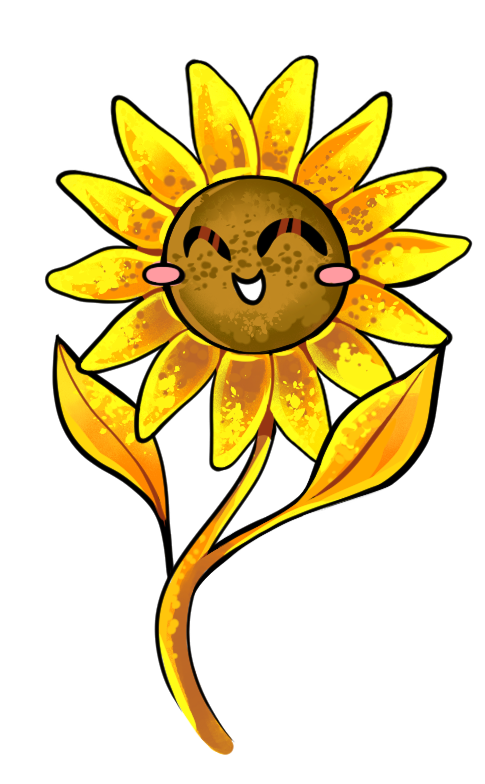

Alegria

O que é a alegria?
A alegria é causada por algo que nos dá prazer, e por isso, é um sentimento profundamente agradável.
Ao contrário da felicidade, a alegria é de curta duração. No entanto, uma pessoa pode ter muitíssimos momentos alegres durante o dia.
O que acontece durante esses momentos?
És invadido por um prazer divertido. A tua energia aumenta e a tua maneira de pensar torna-se mais positiva.